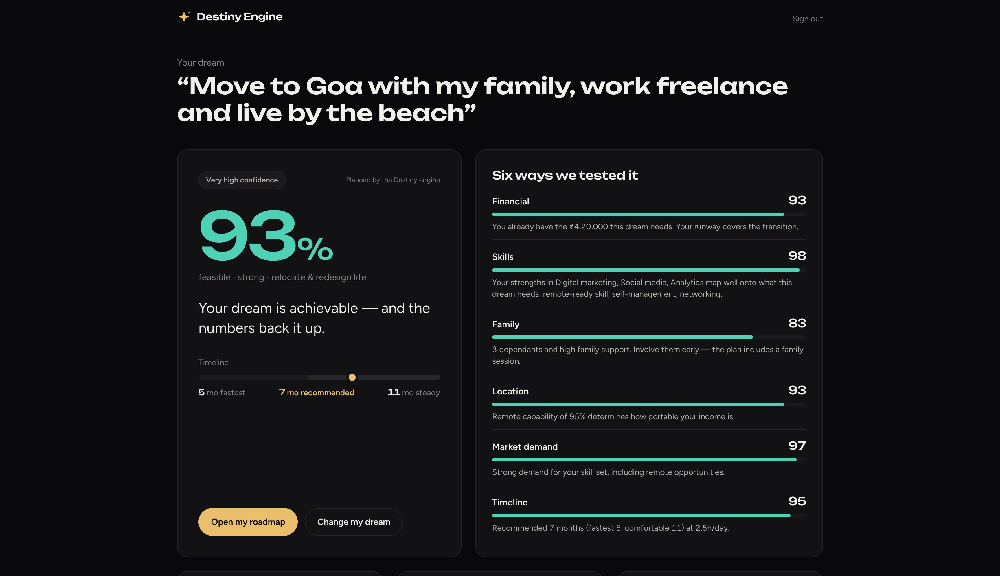
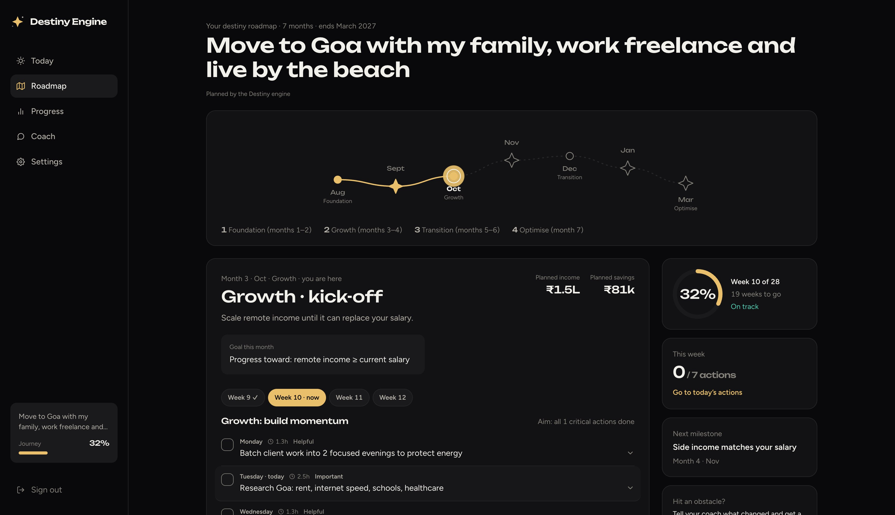
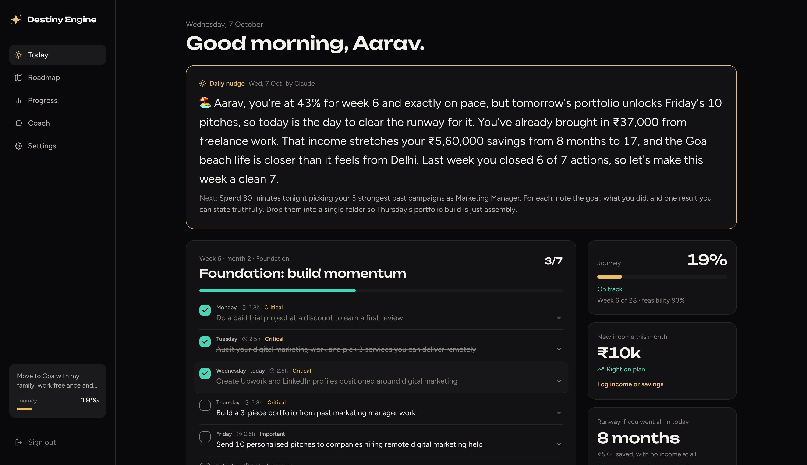
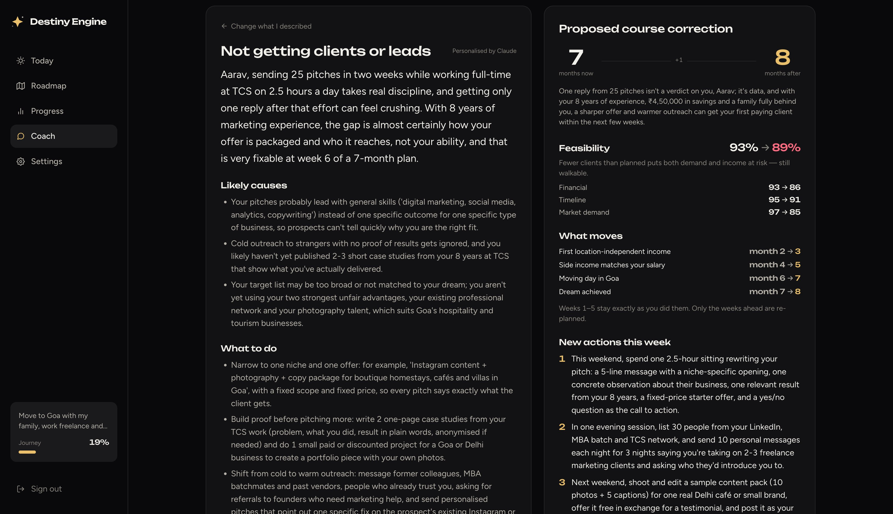

Turn your dream into a map you can walk.
The problem
Everyone has a dream. Almost no one has a plan for this Tuesday.
“Start freelancing” ignores your EMI, your two kids and the 2 hours you actually have.
Plans live in a notes app. When week three slips, nothing tells you — so the dream quietly dies.
One obstacle — no clients, a worried spouse, a surprise bill — and a static plan is useless.
Our insight
Meet Aarav
How it works
26–29 adaptive questions, one at a time. Skip anything — we estimate it.
In your own words, or from 50 dreams people already reached.
Six honest tests: money, skills, family, location, market, time.
Phases, months, weekly checklists, daily coaching and re-planning.
Feasibility

The roadmap

Daily coaching

Adaptive planning

Use cases
Goa, the hills, or abroad
Quit the 9–5 safely
YouTube, podcast, newsletter
Validate before you build
Debt-free, FIRE, first crore
Into tech, PM, data, AI
Café, D2C, cloud kitchen
MS, MBA, scholarships
Marathon, −15 kg, EBC trek
Down payment to keys
How the AI works
Money, skills, family, time, location
Runway, scores, timeline, projections — computed, never invented
Analysis, month plans, coaching, diagnosis — as structured JSON
Field-by-field checks over the baseline
Built in a hackathon, built to last
node:sqlite — zero native depsclaude-opus-5-5Who it’s for
Free feasibility and roadmap. Paid tier for AI-personalised months, daily coaching and unlimited re-plans.
Every dream has a savings plan inside it — a natural front door for SIPs, savings goals and loans.
Internal career-switch roadmaps, learning paths tied to real outcomes, and wellbeing programmes.
What’s next
Live demo
localhost:5173 → Explore a live demo
Destiny Engine — turn your dream into a map you can walk.